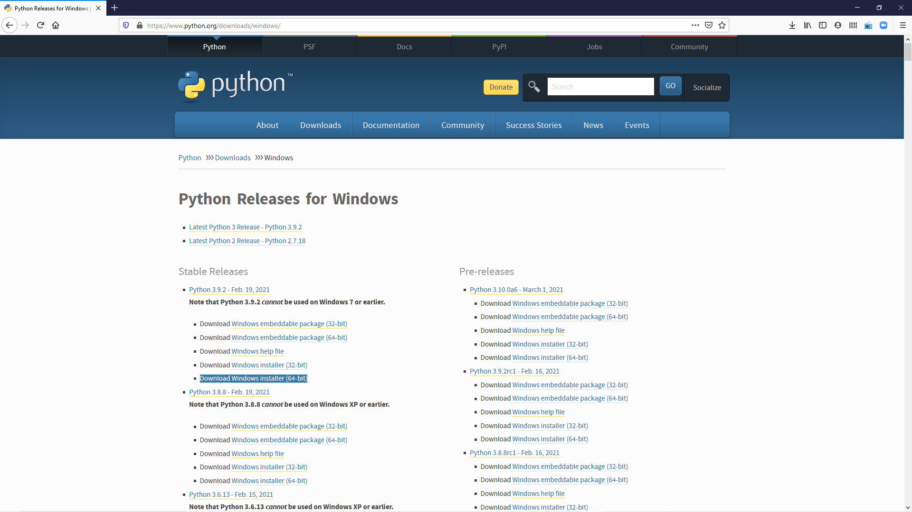
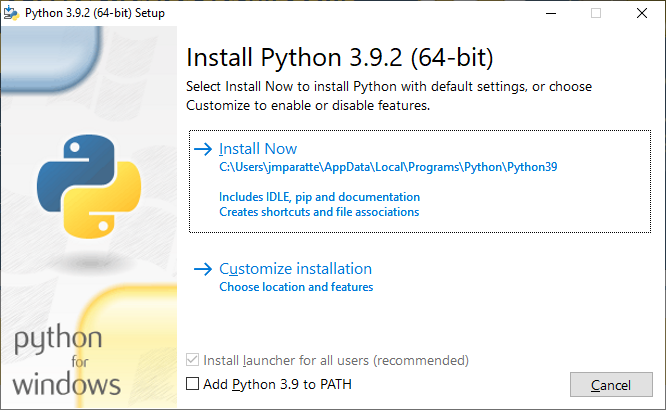
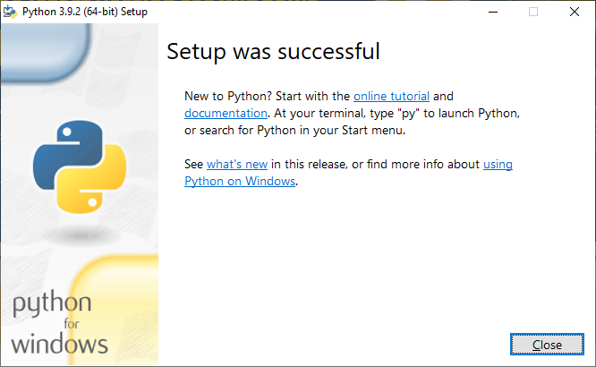
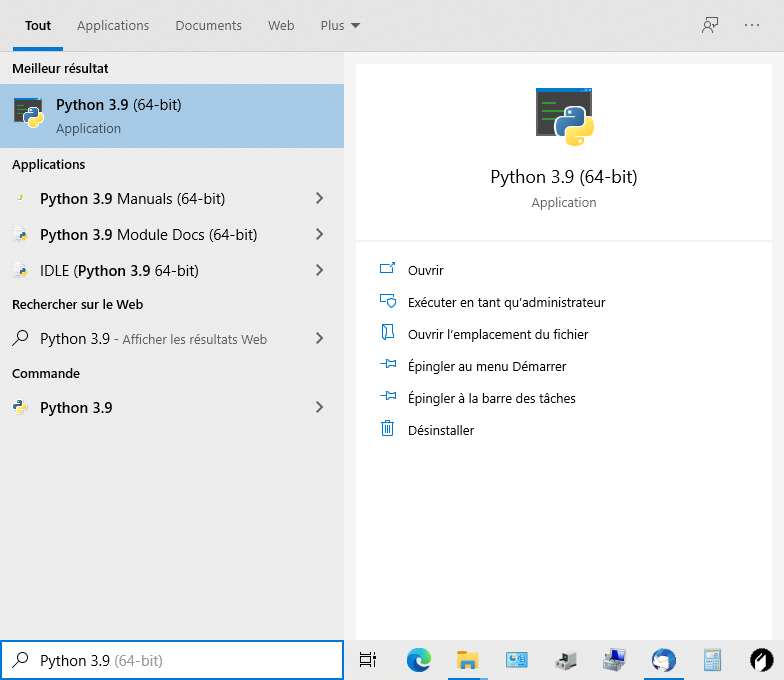
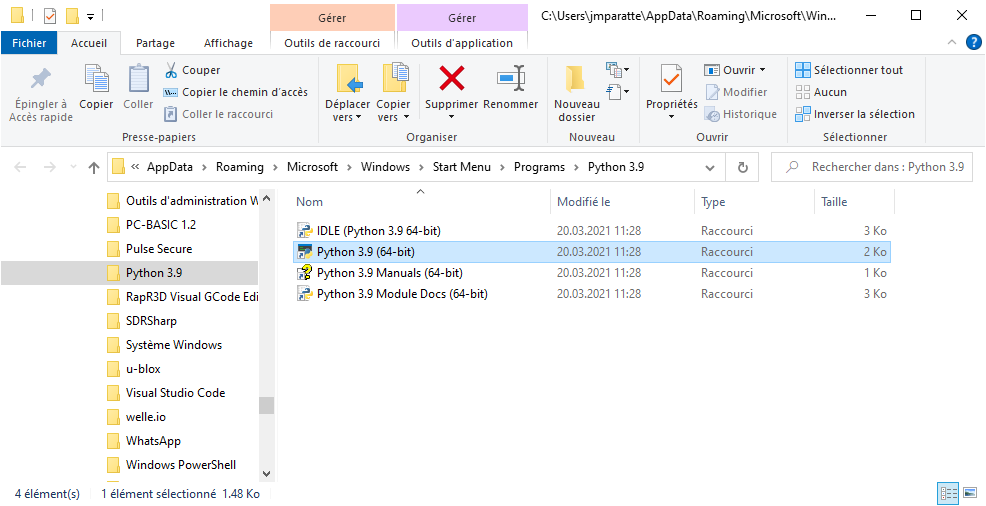
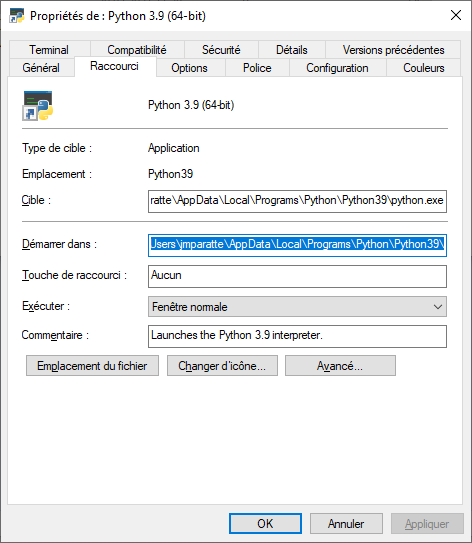
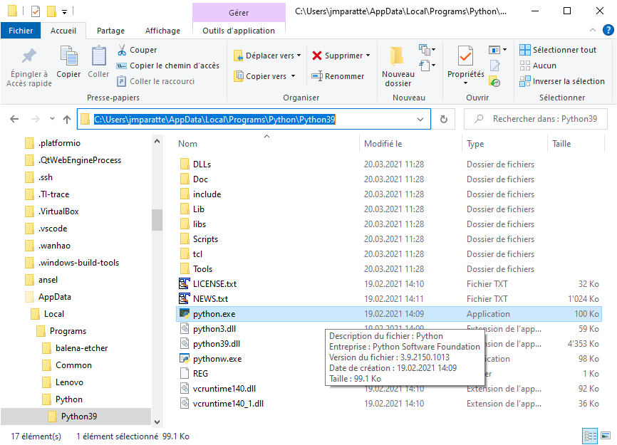
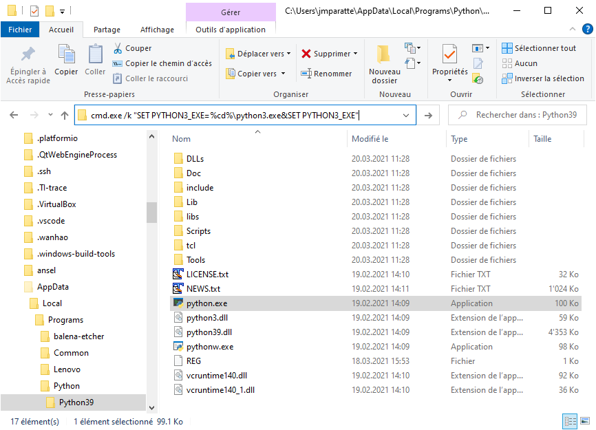
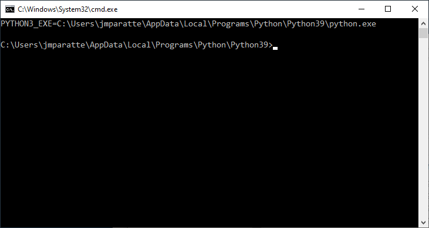
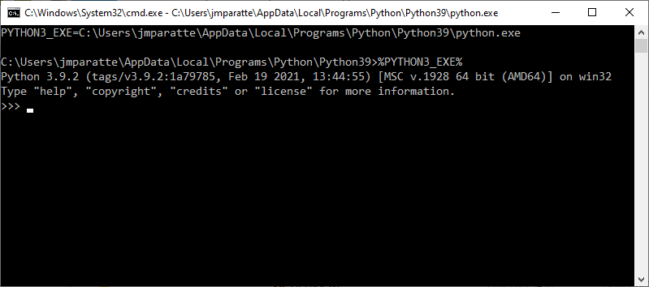

Installation Python 3
> Home > Français > Installation > Python 3
Python 3 for Windows
Liens
- Page de présentation du programme Python
- Page des téléchargements Python
- Page des téléchargements Python Releases for Windows
- Page des téléchargements FTP Index of /ftp/python/
Téléchargement de Python 3
Le téléchargement est effectué depuis la Page des téléchargements Python Releases for Windows:

- Identifier la section Stable Releases dans la colonne de gauche
- Cliquer le lien Download Windows installer (64-bit) au bas de la section
Installation de Python 3
L'installation démarre en mettant en exécution le programme téléchargé python-3.9.2-amd64.exe (ou une version plus récente, 3.9.2 au moment de la rédaction de cette page).
- Démarrer le programme python-3.9.2-amd64.exe:

Remarques:
- Install Now installera Python 3 uniquement pour l'utilisateur en cours.
- Install laucher for all users (recommended) grisé ne sera pas installé.
- add Python 3 to PATH désélectionné ne sera pas inscrit.
Les valeurs par défaut proposées par l'installateur sont recommandées car la confusion des versions Python 2 et 3 pourraient être une source de dérangements pour d'autres applications Python.
- Cliquer sur le bouton Install Now pour poursuivre automatiquement l'installation:

- Cliquer sur le bouton Close pour achever l'installation.
Création de la variable d'environnement PYTHON3_EXE
La variable d'environnement PYTHON3_EXE indique la version appropriée de Python à utiliser dans les scripts.
- Copier Python 3.9 (64-bit) dans la zone de recherche Windows Taper ici pour rechercher:
(Écrire Python 3 dans la zone de recherche est suffisant.)

- Cliquer la commande Ouvrir l'emplacement du fichier:

- Afficher les propriétés de Python 3.9 (64-bit):
(Par le menu de l'explorateur de fichiers ou par Alt-Enter.)

- Copier le chemin Démarrer dans et le coller dans un Explorateur de fichiers:

- Taper la commande
cmd.exe /k "SET PYTHON3_EXE=%CD%\python.exe&SET PYTHON3_EXE" dans la zone d'adresse et exécuter:

- Une Invite de commandes s'ouvre et affiche le résultat de la commande:

- Taper la commande
%PYTHON3_EXE% pour vérifier le démarrage de Python 3:

Le programme Python démarre et affiche la version, actuellement 3.9.2.
- Taper Ctrl-Z Enter pour quitter Python.
- Taper la commande
exit pour fermer l'invite de commandes.
Document mis à jour le 25.03.2021 10:33:29 UTC+01:00